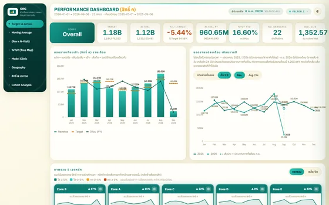
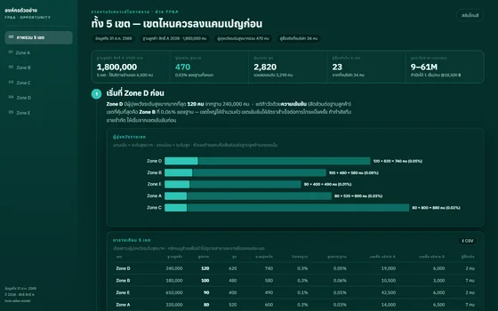
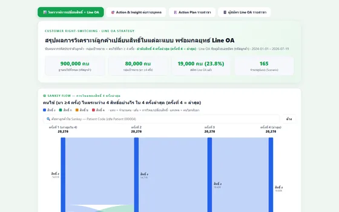
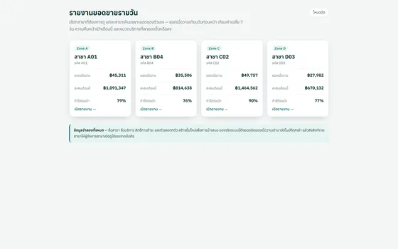
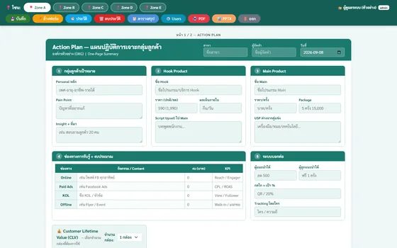
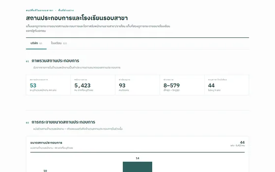

| มิตรไมตรีการแพทย์
| มิตรไมตรีการแพทย์
Data Analyst
Nov 2025 - Present
75 สาขา · 7 เขต · ข้อมูลย้อนหลัง 32 เดือน · ส่งมอบแล้ว 7 ระบบ
Scope of Work :
- Built and maintained the department's data pipeline in Python and Power Query — consolidating line-level service records from several source systems, reconciling branch and item codes that never matched across them, and publishing analysis-ready tables.
- Modelled the data warehouse as a star schema in Power BI, authored the DAX measure layer, and added Calculation Groups so the team can switch between Actual / Target / YoY views without duplicating measures.
- Advanced analytics that the sales team can act on — cohort analysis, RFM segmentation, market basket analysis, payment-right switching, and look-alike scoring.
-
Delivered 7 internal products, not just reports — web tools the team opens on its own every day.
Details
- Performance dashboard — 8 pages in a single file (target vs actual, moving average, cohort retention, geography, waiting time), every chart hand-written in SVG
- Payment-right switching analysis + Line OA follow-up plan
- Daily branch sales report, delivered per branch every morning
- Departmental data portal with zone-level access control
- Action-plan form that exports presentation-ready PDF, Excel and PowerPoint
- Area survey around each branch for corporate-client prospecting
- High-value product targeting with an explainable look-alike score
ลักษณะงาน :
- วางและดูแลท่อข้อมูลของฝ่าย ด้วย Python และ Power Query — รวมข้อมูลการรับบริการระดับรายบรรทัดจากหลายระบบ จับคู่รหัสสาขาและรหัสรายการที่สะกดไม่ตรงกัน แล้วสรุปเป็นตารางที่พร้อมใช้วิเคราะห์ต่อ
- ออกแบบคลังข้อมูลเป็น Star Schema ใน Power BI เขียนชุด DAX เอง และทำ Calculation Group ให้สลับมุมมอง Actual / Target / YoY ได้โดยไม่ต้องสร้าง measure ซ้ำ
- วิเคราะห์เชิงลึกที่ทีมขายหยิบไปใช้ต่อได้ — Cohort Analysis, RFM Segmentation, Market Basket, การเปลี่ยนสิทธิ์การชำระ และการให้คะแนนกลุ่มเป้าหมายแบบ look-alike
-
ส่งมอบ 7 ระบบที่คนในทีมเปิดใช้เองได้ทุกวัน ไม่ได้หยุดที่การส่งรายงาน
รายละเอียด
- แดชบอร์ดติดตามผลประกอบการ — 8 หน้าในไฟล์เดียว (เทียบเป้า, Moving Average, การกลับมาใช้บริการ, แผนที่, เวลารอ) กราฟทั้งหมดเขียนเป็น SVG เอง
- วิเคราะห์ลูกค้าเปลี่ยนสิทธิ์การชำระ พร้อมแผนติดตามผ่าน Line OA
- รายงานยอดขายรายวัน ส่งให้ผู้จัดการแต่ละสาขาเปิดดูเองทุกเช้า
- ศูนย์รวมข้อมูลของฝ่าย พร้อมระบบล็อกอินแยกสิทธิ์ตามเขต
- ฟอร์มแผนปฏิบัติการรายเขต กรอกเสร็จได้ PDF, Excel และ PowerPoint ทันที
- สำรวจสถานประกอบการและโรงเรียนรอบสาขา เพื่อจัดลำดับการหาลูกค้าองค์กร
- คัดกลุ่มเป้าหมายสินค้าราคาสูง ด้วยคะแนนแบบ look-alike ที่อธิบายที่มาได้
ตัวอย่างผลงาน คลิกที่รูปเพื่อขยาย · คลิกที่ชื่อเพื่อเข้าไปดูผลงาน






Read More